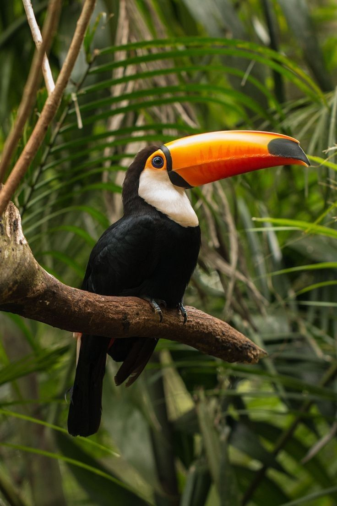
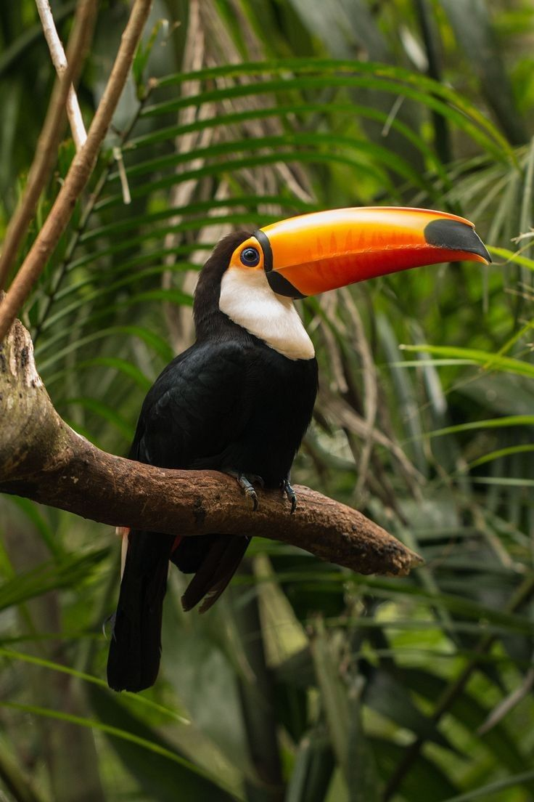

.jpg)

 

Resumo

Vida terrestre se refere a todas as formas de vida que habitam a superfície da Terra, em contraste com as formas de vida aquáticas ou marinhas, que vivem nos oceanos, mares, rios e outros corpos d'água.
Vida terrestre inclui uma ampla variedade de organismos, desde microrganismos como bactérias e fungos até plantas, animais e seres humanos. Esses organismos terrestres evoluíram ao longo de bilhões de anos para se adaptar aos ambientes específicos encontrados na superfície do planeta.
Proteção
Proteger a vida terrestre refere-se a preservar e conservar a diversidade de formas de vida que habitam o planeta Terra.
A proteção da vida terrestre é muito importante por diversos motivos, como: Biodiversidade, Serviços ecossistêmicos, Combate às mudanças climáticas, Preservação cultural e Prevenção da extinção. Essas são apenas algumas maneiras pelas quais podemos contribuir para proteger a vida terrestre e a biodiversidade.
Saiba maisBiodiversidade
Existem muitas maneiras pelas quais podemos contribuir para proteger a vida terrestre e a biodiversidade. Abaixo estão algumas dicas:
Reduzir, reutilizar e reciclar, Comprar produtos sustentáveis, Conservar a água, Apoiar a conservação de habitats naturais, Plantar árvores, Apoiar práticas agrícolas sustentáveis e Proteger a vida selvagem.
Manutenção
Segundo o site de monitoramento do ODS 15 da Plataforma da Agenda 2030, este objetivo parte de uma premissa importante: a de que os seres humanos e os outros animais dependem da natureza para terem alimento, ar puro e água limpa.
Mas não só isso: todos eles também dependem da natureza como um meio de combate à mudança do clima. E, para que tudo isso seja possível, é importante também lembrar que as florestas, que cobrem 30% da superfície da Terra, ajudam a manter o ar, a água limpa e o clima do planeta em equilíbrio. Além disso, elas são o lar de milhões de espécies.
Saiba mais“proteger, restaurar e promover o uso sustentável dos ecossistemas terrestres, gerir de forma sustentável as florestas, combater a desertificação e travar e reverter a degradação dos solos e travar a perda da biodiversidade”